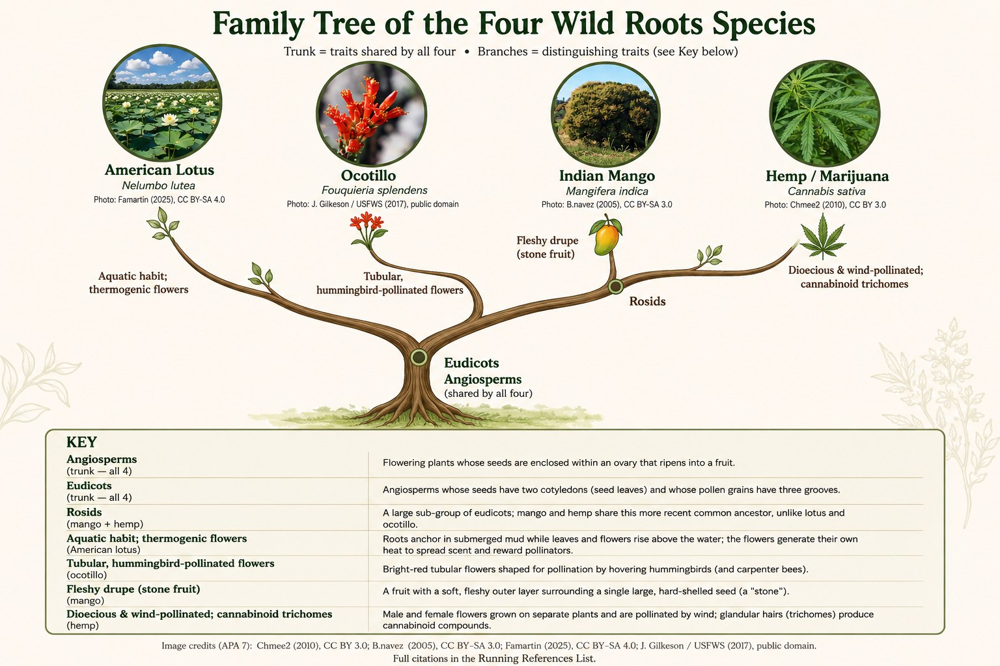

Family Tree
How the four featured species are related: all four are flowering plants (angiosperms) and eudicots — the shared traits on the trunk — while each branch marks a trait that sets one or more species apart. The full key and image credits appear on the graphic below.
